Survival outcomes: a disconnected network under proportional hazards
Source:vignettes/survival-outcomes.Rmd
survival-outcomes.Rmd
library(cpaic)
library(ggplot2)
library(survival)
#> Warning: package 'survival' was built under R version 4.6.1
set.seed(2026)This vignette is the time-to-event counterpart of
vignette("continuous-outcomes"): the same problem (a
treatment network that is disconnected and whose trials
enrolled different populations), the same two routes (frequentist
two-stage, one-stage Bayesian), but on a
non-collapsible scale and with an exact survival
likelihood. Read the continuous vignette first if you want the easy
version; almost everything that is simple there is subtle here.
The data here are entirely simulated. The clinical setting (heart failure with reduced ejection fraction) is used only for its vocabulary, because guideline-directed heart failure therapy is genuinely additive: drugs are stacked onto a background regimen. No data, effect estimate, or result below is taken from any publication, and the interaction pattern we impose is invented for the illustration. We set the true parameter values ourselves, which is what lets us check whether each method recovers them.
The clinical question
The outcome is time to cardiovascular death or heart failure hospitalization, so the summary measure is a hazard ratio (HR) on a proportional-hazards model.
Write Std for standard background care (the inactive
comparator) and use four add-on components: B (a
beta-blocker), M (a mineralocorticoid receptor antagonist),
S (an SGLT2 inhibitor), and A (an angiotensin
receptor-neprilysin inhibitor). The trials fall into two groups that
share no treatment:
-
Sub-network 1, legacy trials adding one drug to
standard care:
StdvsStd+B,StdvsStd+M. -
Sub-network 2, contemporary trials adding one more
drug on top of a beta-blocker and an MRA:
B+MvsB+M+S,B+MvsB+M+A.
No trial links the two. The decision maker still has to ask:
what does a patient on a beta-blocker gain by adding an MRA and
an SGLT2 inhibitor? That is B+M+S versus
Std+B, and it crosses the gap. No trial measured it.
The effect modifier is renal function,
egfr_c = (eGFR
60) / 10, in units of 10
mL/min/1.73m
above 60. The contemporary trials enrolled patients with worse renal
function than the legacy ones, and (in our simulated truth) the MRA’s
benefit shrinks as eGFR rises while the SGLT2 inhibitor’s does not. That
imbalance is exactly what population adjustment is for.
The model
The component-additive ML-NMR gives every individual the hazard
so the conditional log hazard ratio of treatment
versus
in a population with effect-modifier value
is
with
.
As in the continuous case the estimand is population-specific, and
relative_effects() will insist on newdata.
The baseline hazard, and why the likelihood is exact
cpaic writes the baseline hazard as a positive combination of basis functions, , and evaluates both the basis and its exact integral . Two choices:
baseline |
Controlled by | |
|---|---|---|
"piecewise" (default) |
a step function, one free level per interval |
cut_points (NULL gives the exponential
model) |
"mspline" |
a continuous cubic M-spline; the cumulative hazard uses the exact integrated I-spline basis, with a simplex constraint on the coefficients (Phillippo, Sadek, et al. 2025) | n_basis |
Because the integrated basis is available in closed form, the cumulative hazard is exact, and so is every likelihood contribution. There is no numerical quadrature over time anywhere in the model. The construction follows the general-likelihood ML-NMR of Phillippo, Dias, et al. (2025), specialized to a component-additive treatment effect.
Write
for the cumulative hazard and let
be the patient’s entry time (.entry, zero unless they
entered late). Everything is conditioned on survival to
,
so every contribution is written through the
entry-conditioned cumulative hazard
The four status codes then contribute
The placement of the conditioning matters and is easy to get wrong.
For an observed event or a right-censored observation you may add
afterwards and get the same answer, because the contribution is linear
in the cumulative hazard. For a left-censored
observation you may not:
is not a probability and can exceed one, whereas
is the correct term. The conditioning has to go inside.
.entry is optional (a missing column means everyone enters
at zero), and interval-censored rows take their lower endpoint from
.start.
Aggregate survival data must be pseudo-IPD
This is the part people get wrong, so it gets its own subsection.
An aggregate survival arm must be supplied to cmlnmr()
as reconstructed pseudo-individual rows: one row per
(pseudo-)patient with a .time and a .y status,
exactly the object multinma::set_agd_surv() expects, and
exactly what the Guyot algorithm produces from a digitized Kaplan-Meier
curve (Guyot et al.
2012). Event counts plus person-time will not do, and cpaic
rejects them.
The reason is not fussiness. A published arm is a mixture over its covariate distribution, and the model has to integrate the individual likelihood over that mixture. The tempting shortcut, “expected events = total person-time times the mean hazard”, is exact within a homogeneous group and wrong for a mixture, because hazard and person-time are negatively correlated: high-hazard patients leave the risk set early, so most of the person-time is contributed by low-hazard patients, and multiplying it by the average hazard over-counts events. Formally with .
Two equal groups with hazards 0.1 and 0.4, followed to time 10:
h <- c(0.1, 0.4) # constant hazards in the two halves
w <- c(0.5, 0.5) # equal mixing weights
tau <- 10 # administrative censoring
exact <- sum(w * (1 - exp(-h * tau))) # events per person
person_time <- sum(w * (1 - exp(-h * tau)) / h) # E[min(T, tau)]
approx <- person_time * sum(w * h) # person-time x mean hazard
round(c(exact = exact, approximation = approx,
inflation = approx / exact), 4)
#> exact approximation inflation
#> 0.8069 1.0969 1.3594The person-time approximation is biased upward by 36%, on a completely ordinary amount of hazard heterogeneity. That is why the aggregate survival API takes pseudo-IPD and integrates the likelihood row by row.
Simulating the evidence
treatments <- c("Std", "Std+B", "Std+M", "B+M", "B+M+S", "B+M+A")
Cmat <- build_C_matrix(treatments, inactive = "Std")
Cmat
#> A B M S
#> Std 0 0 0 0
#> Std+B 0 1 0 0
#> Std+M 0 0 1 0
#> B+M 0 1 1 0
#> B+M+S 0 1 1 1
#> B+M+A 1 1 1 0
# TRUTH (conditional log hazard ratios at eGFR 60).
beta_true <- c(A = -0.20, B = -0.35, M = -0.30, S = -0.26)
# Invented interactions: the MRA loses ground as renal function improves;
# the SGLT2 inhibitor gains a little; the beta-blocker is unmodified.
gamma_true <- c(A = 0.05, B = 0.00, M = 0.18, S = -0.08)
stopifnot(identical(names(beta_true), colnames(Cmat)))The interesting consequence, which we will have to recover: the MRA’s component effect is , so at eGFR 50 () it is a log hazard ratio of , and at eGFR 70 () it is only . Adding the SGLT2 inhibitor contributes a further , which barely moves. In a preserved-renal-function population the MRA has almost nothing left to give and the SGLT2 inhibitor supplies the benefit; in a chronic-kidney-disease population the MRA is carrying most of it. One hazard ratio cannot say both.
The data-generating model is a Weibull proportional-hazards model
with an increasing baseline hazard. Delayed entry is simulated properly,
by drawing the event time from the distribution conditional on
survival past the entry time; this is what left truncation is,
and it is why a naive analysis that ignores .entry is
biased.
lambda <- 0.022; kshape <- 1.2; prognostic <- -0.35; maxt <- 36
gen_arm <- function(study, trt, n, mu0, egfr_mean, egfr_sd = 18,
p_late = 0, dropout = 0.008) {
x <- (rnorm(n, egfr_mean, egfr_sd) - 60) / 10
tc <- Cmat[trt, ]
eta <- mu0 + prognostic * x +
sum(tc * beta_true) + sum(tc * gamma_true) * x
entry <- rep(0, n)
if (p_late > 0) entry <- ifelse(runif(n) < p_late, runif(n, 1, 8), 0)
u <- runif(n)
# Weibull PH, drawn conditional on T > entry: that is what left truncation is.
tt <- (entry^kshape - log(u) / (lambda * exp(eta)))^(1 / kshape)
cn <- pmin(entry + rexp(n, dropout), maxt) # dropout + administrative
data.frame(.study = study, .trt = trt,
.time = pmin(tt, cn), .y = as.integer(tt <= cn),
.entry = entry, egfr_c = x)
}
ipd <- rbind(
gen_arm("HF-2", "Std", 150, 0.00, 66), # sub-network 1
gen_arm("HF-2", "Std+M", 150, 0.00, 66),
gen_arm("HF-3", "B+M", 150, 0.00, 58), # sub-network 2
gen_arm("HF-3", "B+M+S", 150, 0.00, 58),
gen_arm("HF-4", "B+M", 150, 0.00, 54),
gen_arm("HF-4", "B+M+S", 150, 0.00, 54))
ipd$.entry <- NULL # nobody enters late: column optional
published <- rbind(
gen_arm("HF-1", "Std", 50, 0.10, 68),
gen_arm("HF-1", "Std+B", 50, 0.10, 68),
gen_arm("HF-5", "B+M", 50, -0.05, 62),
gen_arm("HF-5", "B+M+A", 50, -0.05, 62),
gen_arm("HF-6", "Std", 50, 0.05, 72, p_late = 0.30), # 30% enter late
gen_arm("HF-6", "Std+M", 50, 0.05, 72, p_late = 0.30))Now we throw away what a publication does not give us. From
published we keep the Kaplan-Meier curve
(here, the pseudo-IPD rows that a Guyot reconstruction would return) and
the baseline table (an arm-level mean and SD of eGFR).
The individual covariate values are discarded.
covs <- do.call(rbind, lapply(
split(published, list(published$.study, published$.trt), drop = TRUE),
function(d) data.frame(.study = d$.study[1], .trt = d$.trt[1],
egfr_c_mean = mean(d$egfr_c),
egfr_c_sd = sd(d$egfr_c))))
agd <- merge(published[, c(".study", ".trt", ".time", ".y", ".entry")],
covs, by = c(".study", ".trt"), sort = FALSE)
str(agd)
#> 'data.frame': 300 obs. of 7 variables:
#> $ .study : chr "HF-1" "HF-1" "HF-1" "HF-1" ...
#> $ .trt : chr "Std" "Std" "Std" "Std" ...
#> $ .time : num 0.659 1.303 27.633 12.206 19.33 ...
#> $ .y : int 1 1 1 1 1 0 1 1 0 1 ...
#> $ .entry : num 0 0 0 0 0 0 0 0 0 0 ...
#> $ egfr_c_mean: num 0.573 0.573 0.573 0.573 0.573 ...
#> $ egfr_c_sd : num 1.83 1.83 1.83 1.83 1.83 ...Every aggregate row carries its arm’s covariate summary, repeated. That is all the model needs: it integrates each row’s likelihood over the covariate distribution implied by the mean and SD.
Covariate balance
mean_by_study <- function(d, col) {
m <- tapply(d[[col]], d$.study, mean)
data.frame(study = names(m), eGFR = 60 + 10 * as.numeric(m))
}
balance <- rbind(
cbind(mean_by_study(ipd, "egfr_c"), source = "IPD"),
cbind(mean_by_study(agd, "egfr_c_mean"), source = "AgD"))
balance$subnetwork <- ifelse(balance$study %in% c("HF-1", "HF-2", "HF-6"), 1, 2)
knitr::kable(balance[order(balance$subnetwork, balance$study), ], digits = 1,
row.names = FALSE,
caption = "Mean eGFR by trial: the imbalance across the gap")| study | eGFR | source | subnetwork |
|---|---|---|---|
| HF-1 | 66.4 | AgD | 1 |
| HF-2 | 66.5 | IPD | 1 |
| HF-6 | 72.3 | AgD | 1 |
| HF-3 | 59.4 | IPD | 2 |
| HF-4 | 52.3 | IPD | 2 |
| HF-5 | 64.2 | AgD | 2 |
The legacy trials run around 66 to 72 mL/min and the contemporary ones around 54 to 62, a gap of roughly 10 mL/min. Since the MRA’s log hazard ratio moves by per 10 mL/min, that gap on its own is worth about 0.18 on the log scale, against an MRA effect of . The imbalance is more than half the size of the effect we are trying to measure.
The observed evidence
keep <- c(".study", ".trt", ".time", ".y", ".entry")
all_dat <- rbind(cbind(ipd[, setdiff(keep, ".entry")], .entry = 0),
agd[, keep])
km_curve <- function(d) {
s <- survfit(Surv(.entry, .time, .y) ~ 1, data = d)
data.frame(.study = d$.study[1], .trt = d$.trt[1],
time = c(0, s$time), surv = c(1, s$surv))
}
km <- do.call(rbind, lapply(
split(all_dat, list(all_dat$.study, all_dat$.trt), drop = TRUE), km_curve))
km$subnetwork <- ifelse(km$.study %in% c("HF-1", "HF-2", "HF-6"),
"1: legacy (Std backbone)",
"2: contemporary (B+M backbone)")
ggplot(km, aes(time, surv, color = .trt)) +
geom_step(linewidth = 0.8) +
facet_wrap(~ subnetwork + .study, nrow = 2) +
scale_y_continuous(limits = c(0, 1)) +
labs(x = "Months", y = "Event-free survival", color = NULL,
title = "Observed Kaplan-Meier curves",
subtitle = paste("HF-2, HF-3, HF-4 are IPD; HF-1, HF-5, HF-6 are",
"reconstructed from published KM curves.",
"No treatment label appears in both rows.")) +
theme_minimal(base_size = 10) +
theme(legend.position = "bottom")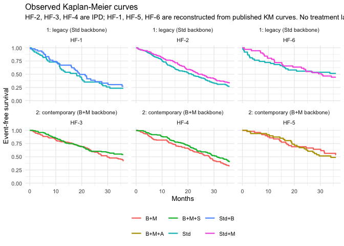
plot of chunk km
Look across the two rows: no treatment label is shared. That is the disconnection, and no amount of Kaplan-Meier plotting will fix it.
Setting up the data
As in the continuous vignette, the frequentist route wants
contrast-level aggregate data. For a survival outcome the “published”
contrast is the trial’s own log hazard ratio, which we obtain from each
aggregate trial’s reconstructed data (and, for HF-6, with
its delayed entry handled).
study_loghr <- function(s, t1, t2) {
d <- all_dat[all_dat$.study == s, ]
d$arm <- as.integer(d$.trt == t1)
f <- coxph(Surv(.entry, .time, .y) ~ arm, data = d)
data.frame(studlab = s, treat1 = t1, treat2 = t2,
TE = unname(coef(f)), seTE = unname(sqrt(diag(vcov(f)))))
}
contrasts <- rbind(
study_loghr("HF-1", "Std+B", "Std"),
study_loghr("HF-2", "Std+M", "Std"),
study_loghr("HF-3", "B+M+S", "B+M"),
study_loghr("HF-4", "B+M+S", "B+M"),
study_loghr("HF-5", "B+M+A", "B+M"),
study_loghr("HF-6", "Std+M", "Std"))
knitr::kable(contrasts, digits = 3, row.names = FALSE,
caption = "Unadjusted within-trial log hazard ratios, as published")| studlab | treat1 | treat2 | TE | seTE |
|---|---|---|---|---|
| HF-1 | Std+B | Std | -0.178 | 0.249 |
| HF-2 | Std+M | Std | -0.208 | 0.148 |
| HF-3 | B+M+S | B+M | -0.256 | 0.173 |
| HF-4 | B+M+S | B+M | -0.234 | 0.155 |
| HF-5 | B+M+A | B+M | 0.104 | 0.302 |
| HF-6 | Std+M | Std | 0.160 | 0.294 |
HF-2 and HF-6 both compare
Std+M with Std, and they do not agree. They
also enrolled populations 6 mL/min apart in mean eGFR, which under our
simulated truth is worth about 0.11 on the log hazard scale. The
two-stage bridge will call that disagreement heterogeneity; the
one-stage model will call it effect modification and use it. (With only
50 pseudo-patients per arm, HF-6 is also just noisy, and it
would be dishonest to pretend the raw numbers separate those two
explanations. Nothing below leans on them.)
net <- cpaic_network(contrasts, ipd = ipd, sm = "HR", family = "survival",
ipd_time = ".time", ipd_status = ".y",
ipd_covariates = "egfr_c", inactive = "Std")
net
#> cpaic component network
#> Summary measure: HR
#> Treatments: 6
#> Components: 4 (A, B, M, S)
#> AgD comparisons: 6
#> Reference: Std
#> Inactive: Std
#> IPD studies: 3 (survival; 900 patients)
#> Connected: FALSE | components bridgeable: TRUE
cpaic_connectivity(net)
#> cpaic connectivity
#> Connected network: FALSE
#> Sub-networks: 2
#> [1] 3 treatments
#> [2] 3 treatments
#> Bridging components: B, M
#> Component design: rank(X) = 4 / 4 components -> all component effects identified
#> Estimable effects: 5 / 5 vs StdThe network plot puts both halves of the problem in one picture.
plot(net)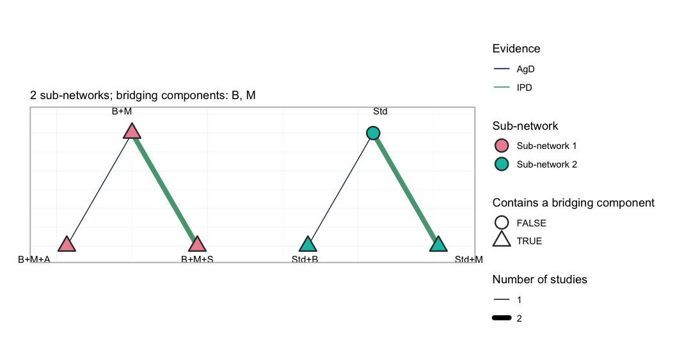
plot of chunk netplot
Each sub-network is drawn on its own circle, so the disconnection is
not something the reader has to take on trust: no edge crosses from the
left group to the right. Edge color separates the trials that carry
individual patient data from those that do not, and the outlined nodes
are the treatments containing a bridging component. The subtitle names
those components, and cpaic_connectivity() above names them
too: B and M, the beta-blocker and the MRA,
are the only treatment components that occur on both sides of the gap.
They are the entire basis on which the additive component model
reconnects the network.
The target population
target_ckd <- c(egfr_c = -1) # eGFR 50: chronic kidney disease
target_pres <- c(egfr_c = 1) # eGFR 70: preserved renal function
# The chronic-kidney-disease target again, as the one-row data frame that the
# Bayesian model's `newdata` argument takes.
target <- data.frame(egfr_c = -1)
theta <- function(trt, x) sum(Cmat[trt, ] * (beta_true + gamma_true * x))
truth <- function(t1, t2, x) theta(t1, x) - theta(t2, x)
data.frame(
target = c("eGFR 50", "eGFR 70"),
`B+M vs Std+B (true HR)` = exp(c(truth("B+M", "Std+B", -1),
truth("B+M", "Std+B", 1))),
`B+M+S vs Std+B (true HR)` = exp(c(truth("B+M+S", "Std+B", -1),
truth("B+M+S", "Std+B", 1))),
check.names = FALSE)
#> target B+M vs Std+B (true HR) B+M+S vs Std+B (true HR)
#> 1 eGFR 50 0.6187834 0.5168513
#> 2 eGFR 70 0.8869204 0.6312836Fitting
Route 1: the frequentist two-stage bridge
cstc() fits a Cox model per IPD study with treatment,
prognostic main effects, and treatment-by-effect-modifier interactions,
the modifiers centered at the target. Its treatment coefficient is the
conditional log hazard ratio at the target covariate
values. cmaic() reweights each IPD study to the target and
fits an unadjusted weighted Cox model, so its coefficient is the
marginal log hazard ratio in the target population
(Signorovitch et
al. 2010; Phillippo et al.
2018).
stc_ckd <- cstc(net, target = target_ckd, effect_modifiers = "egfr_c")
maic_ckd <- cmaic(net, target = target_ckd, effect_modifiers = "egfr_c",
n_boot = 200, seed = 7)
relative_effects(stc_ckd, reference = "Std+B")
#> Relative effects (HR, back-transformed)
#> treatment comparator estimate se lower upper z p
#> B+M Std+B 0.818 0.169 0.587 1.140 -1.187 0.235
#> B+M+A Std+B 0.908 0.361 0.448 1.841 -0.268 0.789
#> B+M+S Std+B 0.621 0.219 0.404 0.953 -2.180 0.029
#> Std Std+B 1.195 0.269 0.705 2.023 0.662 0.508
#> Std+M Std+B 0.977 0.318 0.524 1.821 -0.072 0.943
relative_effects(maic_ckd, reference = "Std+B")
#> Relative effects (HR, back-transformed)
#> treatment comparator estimate se lower upper z p
#> B+M Std+B 0.874 0.138 0.667 1.145 -0.981 0.327
#> B+M+A Std+B 0.969 0.332 0.506 1.858 -0.093 0.926
#> B+M+S Std+B 0.703 0.183 0.490 1.007 -1.924 0.054
#> Std Std+B 1.195 0.249 0.733 1.946 0.714 0.475
#> Std+M Std+B 1.044 0.285 0.597 1.823 0.150 0.881
effective_sample_size(maic_ckd)
#> HF-2 HF-3 HF-4
#> 156.3300 231.1447 294.8349
forest(stc_ckd, reference = "Std+B")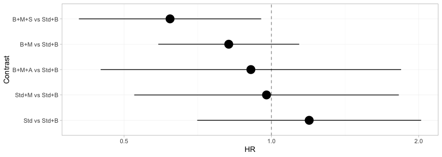
plot of chunk freq-forest
The bridged network, adjusted to the chronic-kidney-disease target, on one axis. Every contrast comes back with an estimate, because the two-stage bridge asks only whether the component design has full rank, and it has. Hold that thought: the Bayesian model below will refuse three of these five, and it will be right to.
Which trials actually pay for a given answer is a separate question,
and plot_edge_influence() answers it.
plot_edge_influence(stc_ckd, treatment = "B+M+S")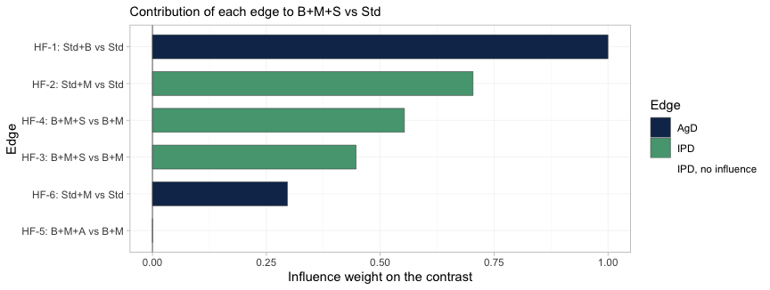
plot of chunk edge-influence
Each bar is the weight with which one observed edge enters the
estimate of B+M+S versus Std. That contrast
decomposes into the components B, M and
S, so it draws on trials from both sub-networks:
HF-1 is the only source of B and carries the
whole weight of it, while HF-3 and HF-4 supply
S, and HF-2 and HF-6 supply
M. This is the bridge doing its work, and no Kaplan-Meier
plot shows it. HF-5 carries exactly zero weight, because
the ARNI component A does not enter this contrast at
all.
The diagnostic bites hardest on IPD edges. An IPD trial with zero influence on the contrast you care about cannot move that contrast however carefully you reweight it, and no MAIC weight diagnostic will tell you so: the effective sample size can look perfectly healthy while the edge is contributing nothing. Such edges are drawn in red and named in the caption; there are none here.
Route 2: the one-stage Bayesian model
We fit a piecewise-exponential baseline and a cubic M-spline
baseline, then compare them. Note what agd is: pseudo-IPD
rows plus arm-level covariate summaries. Nothing else.
fit_pw <- cmlnmr(ipd, agd, effect_modifiers = "egfr_c", inactive = "Std",
family = "survival", baseline = "piecewise",
cut_points = c(9, 18, 27), n_int = 8,
chains = 4, iter_warmup = 400, iter_sampling = 400,
seed = 2026)
fit_pw
#> cpaic: component-additive ML-NMR (Bayesian, survival)
#> Treatment effects: fixed
#> Effect modifiers: egfr_c [normal]
#> Component effects below are at the covariate origin (x = 0).
#> For a target population use relative_effects(fit, newdata = ...).
#>
#> component estimate se lower upper
#> A -0.170 0.394 -1.053 0.538
#> B -0.299 0.262 -0.816 0.206
#> M -0.218 0.131 -0.478 0.032
#> S -0.347 0.129 -0.596 -0.092
fit_ms <- cmlnmr(ipd, agd, effect_modifiers = "egfr_c", inactive = "Std",
family = "survival", baseline = "mspline", n_basis = 5,
n_int = 8,
chains = 4, iter_warmup = 400, iter_sampling = 400,
seed = 2026)
#> Chain 4 Informational Message: The current Metropolis proposal is about to be rejected because of the following issue:
#> Chain 4 Exception: cpaic_survival_mspline_b5f2792f65_model_namespace::log_prob: coefficients[1] is not a valid simplex. sum(coefficients[1]) = nan, but should be 1 (in '/var/folders/2h/yqztgsf96gsbkqn60cymgsjr0000gn/T/RtmpIoTyq5/model-20663f38bdd4.stan', line 143, column 2 to column 48)
#> Chain 4 If this warning occurs sporadically, such as for highly constrained variable types like covariance matrices, then the sampler is fine,
#> Chain 4 but if this warning occurs often then your model may be either severely ill-conditioned or misspecified.
#> Chain 4
#> Chain 4 Informational Message: The current Metropolis proposal is about to be rejected because of the following issue:
#> Chain 4 Exception: cpaic_survival_mspline_b5f2792f65_model_namespace::log_prob: coefficients[1] is not a valid simplex. sum(coefficients[1]) = nan, but should be 1 (in '/var/folders/2h/yqztgsf96gsbkqn60cymgsjr0000gn/T/RtmpIoTyq5/model-20663f38bdd4.stan', line 143, column 2 to column 48)
#> Chain 4 If this warning occurs sporadically, such as for highly constrained variable types like covariance matrices, then the sampler is fine,
#> Chain 4 but if this warning occurs often then your model may be either severely ill-conditioned or misspecified.
#> Chain 4
#> Chain 4 Informational Message: The current Metropolis proposal is about to be rejected because of the following issue:
#> Chain 4 Exception: cpaic_survival_mspline_b5f2792f65_model_namespace::log_prob: coefficients[1] is not a valid simplex. sum(coefficients[1]) = nan, but should be 1 (in '/var/folders/2h/yqztgsf96gsbkqn60cymgsjr0000gn/T/RtmpIoTyq5/model-20663f38bdd4.stan', line 143, column 2 to column 48)
#> Chain 4 If this warning occurs sporadically, such as for highly constrained variable types like covariance matrices, then the sampler is fine,
#> Chain 4 but if this warning occurs often then your model may be either severely ill-conditioned or misspecified.
#> Chain 4
#> Chain 4 Informational Message: The current Metropolis proposal is about to be rejected because of the following issue:
#> Chain 4 Exception: cpaic_survival_mspline_b5f2792f65_model_namespace::log_prob: coefficients[1] is not a valid simplex. sum(coefficients[1]) = nan, but should be 1 (in '/var/folders/2h/yqztgsf96gsbkqn60cymgsjr0000gn/T/RtmpIoTyq5/model-20663f38bdd4.stan', line 143, column 2 to column 48)
#> Chain 4 If this warning occurs sporadically, such as for highly constrained variable types like covariance matrices, then the sampler is fine,
#> Chain 4 but if this warning occurs often then your model may be either severely ill-conditioned or misspecified.
#> Chain 4
#> Chain 4 Informational Message: The current Metropolis proposal is about to be rejected because of the following issue:
#> Chain 4 Exception: cpaic_survival_mspline_b5f2792f65_model_namespace::log_prob: coefficients[1] is not a valid simplex. sum(coefficients[1]) = nan, but should be 1 (in '/var/folders/2h/yqztgsf96gsbkqn60cymgsjr0000gn/T/RtmpIoTyq5/model-20663f38bdd4.stan', line 143, column 2 to column 48)
#> Chain 4 If this warning occurs sporadically, such as for highly constrained variable types like covariance matrices, then the sampler is fine,
#> Chain 4 but if this warning occurs often then your model may be either severely ill-conditioned or misspecified.
#> Chain 4
#> Chain 4 Informational Message: The current Metropolis proposal is about to be rejected because of the following issue:
#> Chain 4 Exception: cpaic_survival_mspline_b5f2792f65_model_namespace::log_prob: coefficients[1] is not a valid simplex. sum(coefficients[1]) = nan, but should be 1 (in '/var/folders/2h/yqztgsf96gsbkqn60cymgsjr0000gn/T/RtmpIoTyq5/model-20663f38bdd4.stan', line 143, column 2 to column 48)
#> Chain 4 If this warning occurs sporadically, such as for highly constrained variable types like covariance matrices, then the sampler is fine,
#> Chain 4 but if this warning occurs often then your model may be either severely ill-conditioned or misspecified.
#> Chain 4
#> Chain 4 Informational Message: The current Metropolis proposal is about to be rejected because of the following issue:
#> Chain 4 Exception: cpaic_survival_mspline_b5f2792f65_model_namespace::log_prob: coefficients[1] is not a valid simplex. sum(coefficients[1]) = nan, but should be 1 (in '/var/folders/2h/yqztgsf96gsbkqn60cymgsjr0000gn/T/RtmpIoTyq5/model-20663f38bdd4.stan', line 143, column 2 to column 48)
#> Chain 4 If this warning occurs sporadically, such as for highly constrained variable types like covariance matrices, then the sampler is fine,
#> Chain 4 but if this warning occurs often then your model may be either severely ill-conditioned or misspecified.
#> Chain 4
#> Chain 4 Informational Message: The current Metropolis proposal is about to be rejected because of the following issue:
#> Chain 4 Exception: cpaic_survival_mspline_b5f2792f65_model_namespace::log_prob: coefficients[1] is not a valid simplex. sum(coefficients[1]) = nan, but should be 1 (in '/var/folders/2h/yqztgsf96gsbkqn60cymgsjr0000gn/T/RtmpIoTyq5/model-20663f38bdd4.stan', line 143, column 2 to column 48)
#> Chain 4 If this warning occurs sporadically, such as for highly constrained variable types like covariance matrices, then the sampler is fine,
#> Chain 4 but if this warning occurs often then your model may be either severely ill-conditioned or misspecified.
#> Chain 4
#> Chain 4 Informational Message: The current Metropolis proposal is about to be rejected because of the following issue:
#> Chain 4 Exception: cpaic_survival_mspline_b5f2792f65_model_namespace::log_prob: coefficients[1] is not a valid simplex. sum(coefficients[1]) = nan, but should be 1 (in '/var/folders/2h/yqztgsf96gsbkqn60cymgsjr0000gn/T/RtmpIoTyq5/model-20663f38bdd4.stan', line 143, column 2 to column 48)
#> Chain 4 If this warning occurs sporadically, such as for highly constrained variable types like covariance matrices, then the sampler is fine,
#> Chain 4 but if this warning occurs often then your model may be either severely ill-conditioned or misspecified.
#> Chain 4
#> Chain 4 Informational Message: The current Metropolis proposal is about to be rejected because of the following issue:
#> Chain 4 Exception: cpaic_survival_mspline_b5f2792f65_model_namespace::log_prob: coefficients[1] is not a valid simplex. sum(coefficients[1]) = nan, but should be 1 (in '/var/folders/2h/yqztgsf96gsbkqn60cymgsjr0000gn/T/RtmpIoTyq5/model-20663f38bdd4.stan', line 143, column 2 to column 48)
#> Chain 4 If this warning occurs sporadically, such as for highly constrained variable types like covariance matrices, then the sampler is fine,
#> Chain 4 but if this warning occurs often then your model may be either severely ill-conditioned or misspecified.
#> Chain 4Each aggregate row’s likelihood is averaged over n_int
quasi-Monte-Carlo points drawn from its arm’s covariate distribution, so
the aggregate cost scales with n_int times the number of
pseudo-patients. With a single effect modifier a Sobol’
sequence in one dimension is essentially a stratified grid and
n_int = 8 integrates a smooth function accurately. Do not
copy that number into an analysis with several correlated covariates;
the default of 64 exists for a reason, and integration error is cheap to
check by refitting with more points. Refitting is in fact the
only check here: plot_integration_error(), which
traces the error against the number of points for the other outcome
families, is not available for a survival model, because an aggregate
arm contributes a log_sum_exp of the likelihood over the
integration points rather than an integrated mean outcome, and there is
no single integrated quantity whose error could be plotted.
fit_re <- cmlnmr(ipd, agd, effect_modifiers = "egfr_c", inactive = "Std",
family = "survival", baseline = "mspline", n_basis = 5,
n_int = 8, trt_effects = "random",
chains = 4, iter_warmup = 400, iter_sampling = 400,
seed = 2026, adapt_delta = 0.95)
#> Chain 4 Informational Message: The current Metropolis proposal is about to be rejected because of the following issue:
#> Chain 4 Exception: cpaic_survival_mspline_b5f2792f65_model_namespace::log_prob: coefficients[1] is not a valid simplex. sum(coefficients[1]) = nan, but should be 1 (in '/var/folders/2h/yqztgsf96gsbkqn60cymgsjr0000gn/T/RtmpIoTyq5/model-20663f38bdd4.stan', line 143, column 2 to column 48)
#> Chain 4 If this warning occurs sporadically, such as for highly constrained variable types like covariance matrices, then the sampler is fine,
#> Chain 4 but if this warning occurs often then your model may be either severely ill-conditioned or misspecified.
#> Chain 4
#> Chain 4 Informational Message: The current Metropolis proposal is about to be rejected because of the following issue:
#> Chain 4 Exception: cpaic_survival_mspline_b5f2792f65_model_namespace::log_prob: coefficients[1] is not a valid simplex. sum(coefficients[1]) = nan, but should be 1 (in '/var/folders/2h/yqztgsf96gsbkqn60cymgsjr0000gn/T/RtmpIoTyq5/model-20663f38bdd4.stan', line 143, column 2 to column 48)
#> Chain 4 If this warning occurs sporadically, such as for highly constrained variable types like covariance matrices, then the sampler is fine,
#> Chain 4 but if this warning occurs often then your model may be either severely ill-conditioned or misspecified.
#> Chain 4
#> Chain 4 Informational Message: The current Metropolis proposal is about to be rejected because of the following issue:
#> Chain 4 Exception: cpaic_survival_mspline_b5f2792f65_model_namespace::log_prob: coefficients[1] is not a valid simplex. sum(coefficients[1]) = nan, but should be 1 (in '/var/folders/2h/yqztgsf96gsbkqn60cymgsjr0000gn/T/RtmpIoTyq5/model-20663f38bdd4.stan', line 143, column 2 to column 48)
#> Chain 4 If this warning occurs sporadically, such as for highly constrained variable types like covariance matrices, then the sampler is fine,
#> Chain 4 but if this warning occurs often then your model may be either severely ill-conditioned or misspecified.
#> Chain 4
#> Chain 4 Informational Message: The current Metropolis proposal is about to be rejected because of the following issue:
#> Chain 4 Exception: cpaic_survival_mspline_b5f2792f65_model_namespace::log_prob: coefficients[1] is not a valid simplex. sum(coefficients[1]) = nan, but should be 1 (in '/var/folders/2h/yqztgsf96gsbkqn60cymgsjr0000gn/T/RtmpIoTyq5/model-20663f38bdd4.stan', line 143, column 2 to column 48)
#> Chain 4 If this warning occurs sporadically, such as for highly constrained variable types like covariance matrices, then the sampler is fine,
#> Chain 4 but if this warning occurs often then your model may be either severely ill-conditioned or misspecified.
#> Chain 4
#> Chain 4 Informational Message: The current Metropolis proposal is about to be rejected because of the following issue:
#> Chain 4 Exception: cpaic_survival_mspline_b5f2792f65_model_namespace::log_prob: coefficients[1] is not a valid simplex. sum(coefficients[1]) = nan, but should be 1 (in '/var/folders/2h/yqztgsf96gsbkqn60cymgsjr0000gn/T/RtmpIoTyq5/model-20663f38bdd4.stan', line 143, column 2 to column 48)
#> Chain 4 If this warning occurs sporadically, such as for highly constrained variable types like covariance matrices, then the sampler is fine,
#> Chain 4 but if this warning occurs often then your model may be either severely ill-conditioned or misspecified.
#> Chain 4
#> Chain 4 Informational Message: The current Metropolis proposal is about to be rejected because of the following issue:
#> Chain 4 Exception: cpaic_survival_mspline_b5f2792f65_model_namespace::log_prob: coefficients[1] is not a valid simplex. sum(coefficients[1]) = nan, but should be 1 (in '/var/folders/2h/yqztgsf96gsbkqn60cymgsjr0000gn/T/RtmpIoTyq5/model-20663f38bdd4.stan', line 143, column 2 to column 48)
#> Chain 4 If this warning occurs sporadically, such as for highly constrained variable types like covariance matrices, then the sampler is fine,
#> Chain 4 but if this warning occurs often then your model may be either severely ill-conditioned or misspecified.
#> Chain 4
#> Chain 4 Informational Message: The current Metropolis proposal is about to be rejected because of the following issue:
#> Chain 4 Exception: cpaic_survival_mspline_b5f2792f65_model_namespace::log_prob: coefficients[1] is not a valid simplex. sum(coefficients[1]) = nan, but should be 1 (in '/var/folders/2h/yqztgsf96gsbkqn60cymgsjr0000gn/T/RtmpIoTyq5/model-20663f38bdd4.stan', line 143, column 2 to column 48)
#> Chain 4 If this warning occurs sporadically, such as for highly constrained variable types like covariance matrices, then the sampler is fine,
#> Chain 4 but if this warning occurs often then your model may be either severely ill-conditioned or misspecified.
#> Chain 4
#> Chain 4 Informational Message: The current Metropolis proposal is about to be rejected because of the following issue:
#> Chain 4 Exception: cpaic_survival_mspline_b5f2792f65_model_namespace::log_prob: coefficients[1] is not a valid simplex. sum(coefficients[1]) = nan, but should be 1 (in '/var/folders/2h/yqztgsf96gsbkqn60cymgsjr0000gn/T/RtmpIoTyq5/model-20663f38bdd4.stan', line 143, column 2 to column 48)
#> Chain 4 If this warning occurs sporadically, such as for highly constrained variable types like covariance matrices, then the sampler is fine,
#> Chain 4 but if this warning occurs often then your model may be either severely ill-conditioned or misspecified.
#> Chain 4
#> Chain 4 Informational Message: The current Metropolis proposal is about to be rejected because of the following issue:
#> Chain 4 Exception: cpaic_survival_mspline_b5f2792f65_model_namespace::log_prob: coefficients[1] is not a valid simplex. sum(coefficients[1]) = nan, but should be 1 (in '/var/folders/2h/yqztgsf96gsbkqn60cymgsjr0000gn/T/RtmpIoTyq5/model-20663f38bdd4.stan', line 143, column 2 to column 48)
#> Chain 4 If this warning occurs sporadically, such as for highly constrained variable types like covariance matrices, then the sampler is fine,
#> Chain 4 but if this warning occurs often then your model may be either severely ill-conditioned or misspecified.
#> Chain 4
#> Warning: 2 of 1600 (0.0%) transitions ended with a divergence.
#> See https://mc-stan.org/misc/warnings for details.
#> Warning: 2 divergent transition(s) in cmlnmr(); results may be unreliable (consider
#> higher adapt_delta or more iterations).
fit_re$fit$summary("tau")
#> # A tibble: 1 × 10
#> variable mean median sd mad q5 q95 rhat ess_bulk ess_tail
#> <chr> <dbl> <dbl> <dbl> <dbl> <dbl> <dbl> <dbl> <dbl> <dbl>
#> 1 tau[1] 0.254 0.163 0.273 0.169 0.0118 0.800 1.01 350. 343.Six studies and four components leave two degrees of freedom for
heterogeneity, so tau is weakly identified and leans on its
half-normal(0, 1) prior. Read it as a sensitivity setting, not as an
estimate. We report the M-spline fixed-effect model as primary.
Priors
str(fit_ms$priors)
#> List of 5
#> $ intercept :List of 3
#> ..$ distribution: chr "normal"
#> ..$ location : num 0
#> ..$ scale : num 2.5
#> $ beta :List of 3
#> ..$ distribution: chr "normal"
#> ..$ location : num 0
#> ..$ scale : num 2.5
#> $ regression:List of 3
#> ..$ distribution: chr "normal"
#> ..$ location : num 0
#> ..$ scale : num 1
#> $ gamma :List of 4
#> ..$ distribution: chr "normal"
#> ..$ location : num 0
#> ..$ scale : num 1
#> ..$ df : num 4
#> $ tau :List of 4
#> ..$ distribution: chr "half-normal"
#> ..$ location : num 0
#> ..$ scale : num 1
#> ..$ df : num 4The component by effect-modifier prior (gamma) is the
load-bearing one. A component whose interaction is informed only by
aggregate arms has nothing but this prior holding it up, which is
precisely why estimable_effects_at() exists and why we
check prior_sensitivity() below.
plot_prior_posterior() is the same statement as a
picture: the posterior is the histogram, the prior is the red line, and
where the two coincide the data have said nothing.
plot_prior_posterior(fit_ms)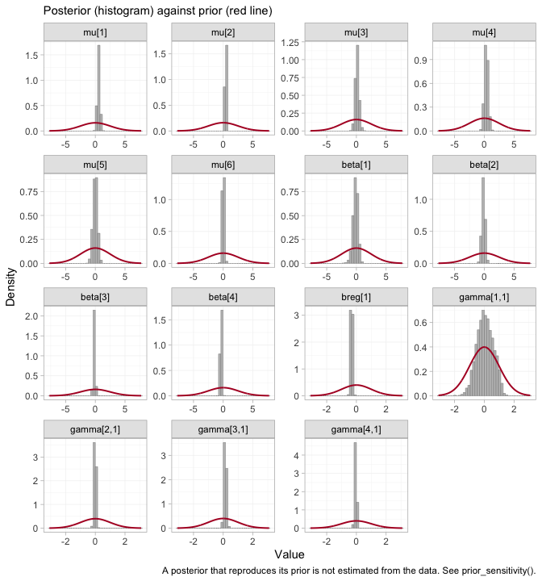
plot of chunk prior-post
plot_prior_posterior(fit_ms, prior = "gamma")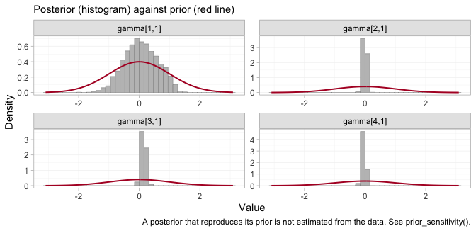
plot of chunk prior-post-gamma
The gamma panels are the four components in the order of
colnames(Cmat): A, B,
M, S. The ARNI interaction,
gamma[1,1], is much the widest of the four, which is what
it looks like when no trial varies eGFR against a component within its
own arms. The MRA and SGLT2 interactions, gamma[3,1] and
gamma[4,1], are identified from within-trial covariate
variation and are far tighter than their prior. A narrow posterior is
not on its own a license to report a contrast, and the next two sections
are about exactly that gap.
Convergence
rbind(
piecewise = unlist(fit_pw$diagnostics),
mspline = unlist(fit_ms$diagnostics),
random = unlist(fit_re$diagnostics))
#> divergences max_treedepth max_rhat
#> piecewise 0 0 1.005617
#> mspline 0 0 1.014945
#> random 2 0 1.010460The summary is not a substitute for looking at the chains.
plot(fit_ms, type = "trace")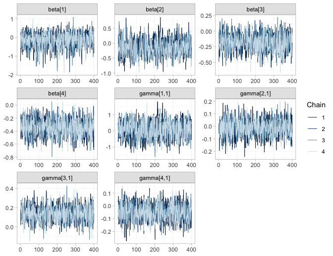
plot of chunk trace
plot(fit_ms, type = "rhat")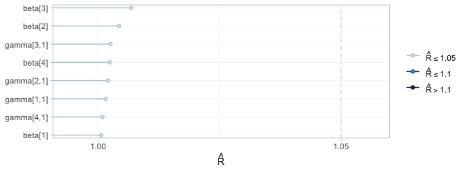
plot of chunk rhat
type = "trace" draws the four chains for the component
effects and their interactions; they should overlay each other and show
neither drift nor stickiness. type = "rhat" collects the
split-Rhat statistics for the same parameters, and the
max_rhat column of the table above is the largest of them.
These are gatekeepers rather than decoration: had the chains not mixed,
nothing below would be worth reading, however narrow the credible
intervals looked.
Results
Does the model reproduce the observed curves?
Before reading a hazard ratio off the model, check that the model can
reproduce the data it was fitted to. plot_survival() draws
the model-implied survival curve for each study arm, averaged over that
arm’s own covariate distribution (the individual covariates for an IPD
arm, the integration points for an aggregate one), with a credible band
that includes the uncertainty in the baseline hazard.
geom_km() overlays the observed Kaplan-Meier curve.
plot_survival(fit_ms) + geom_km(fit_ms)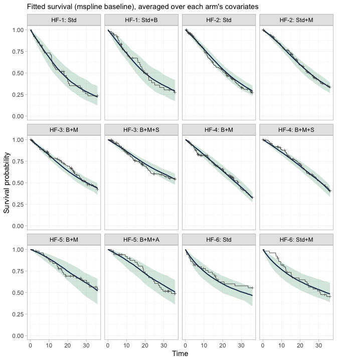
plot of chunk km-overlay
This is the check that the baseline hazards actually fit. Every study carries its own baseline hazard, smoothed by a first-order random-walk prior with a smoothing scale shared across studies, so these twelve panels are not twelve views of one curve: each study’s hazard shape is free to be wrong on its own. A systematic departure of the step function from the band would mean the baseline is too rigid, and would put everything below it in doubt.
One disagreement is guaranteed in advance, and it is
HF-6. Thirty percent of its patients enter late; the model
conditions on their entry times, and geom_km() draws the
ordinary Kaplan-Meier estimator, which does not. The observed curve in
those two panels therefore still carries the immortal time that left
truncation removes, and sits above the fitted curve early on. That gap
is an artifact of the comparison, not a failure of the model.
What is actually estimable?
estimable_effects_at(fit_ms, newdata = data.frame(egfr_c = -1),
reference = "Std+B")
#> Estimability of the population-adjusted relative effects
#> Target population: egfr_c = -1
#> treatment comparator estimable identified_by basis
#> B+M Std+B TRUE IPD first-order screen
#> B+M+A Std+B FALSE none not identified
#> B+M+S Std+B TRUE IPD first-order screen
#> Std Std+B FALSE none not identified
#> Std+M Std+B FALSE none not identified
#>
#> Rows marked "first-order screen" are estimable by the linear criterion, which
#> is only a design-based screen for them (aggregate identification, or a
#> survival baseline) and can be optimistic. Check them with prior_sensitivity().
#>
#> Rows marked "not identified" carry no first-order information; a number
#> reported for them would be the prior. relative_effects() returns NA there.-
B+MandB+M+SagainstStd+Bare the componentsMandM + S. Both are identified from IPD (HF-2forM;HF-3andHF-4forS), so their interactions are pinned by within-trial variation in eGFR and the contrasts are estimable in any target population. These two are the cross-gap comparisons we came for. -
Std,Std+MandB+M+Aare not estimable and come back asNA. Each involvesBorA, and each of those components enters through exactly one aggregate two-arm contrast (HF-1forB,HF-5forA). A single aggregate contrast pins its effect down at that study’s own covariate mean and nowhere else; it cannot separate the main effect from the interaction. A Bayesian model will still hand you a tidy posterior forB+M+AversusStd+B. That posterior is the prior speaking.
Note that the network is perfectly well reconnected:
cpaic_connectivity() above reports rank(X) = 4
out of 4 components, so every component main effect is
identified. Reconnection is necessary and not sufficient. Population
adjustment needs the interactions too.
relative_effects(fit_ms, reference = "Std+B",
newdata = data.frame(egfr_c = -1))
#> Relative effects (HR, back-transformed)
#> Target population: egfr_c = -1
#> treatment comparator estimate se lower upper pr_gt0
#> B+M Std+B 0.737 0.169 0.53 1.020 0.031
#> B+M+A Std+B NA NA NA NA NA
#> B+M+S Std+B 0.555 0.209 0.36 0.826 0.003
#> Std Std+B NA NA NA NA NA
#> Std+M Std+B NA NA NA NA NA
#> NA = not uniquely estimable from this component design (see estimable_effects()).Estimability is a function of the target population, not a property of the network, so it is worth mapping rather than checking at a single point.
plot_estimability(fit_ms, em = "egfr_c", values = seq(-2, 2, by = 0.25),
reference = "Std+B")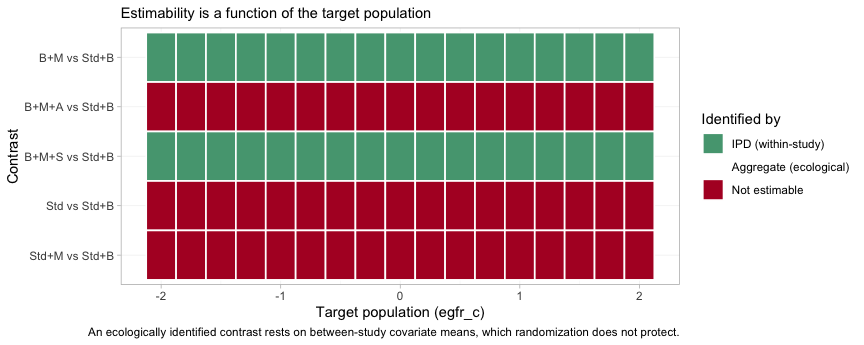
plot of chunk estimability-map
Green is a contrast identified by IPD, from within-trial covariate
variation that randomization protects; red is a contrast the design
cannot identify at that target at all. The two green bands run the full
width of the plot: B+M and B+M+S versus
Std+B are estimable in every population on the grid, which
is what makes them reportable. The three red bands stay red everywhere.
A component carried by a single aggregate contrast is pinned at that
trial’s own covariate mean and nowhere else, and no grid point is that
mean.
The cross-gap hazard ratio, in two named populations
report <- function(fitobj, t1, x, label) {
re <- relative_effects(fitobj, reference = "Std+B",
newdata = data.frame(egfr_c = x))
r <- re[re$treatment == t1, ]
data.frame(target = label, contrast = paste(t1, "vs Std+B"),
HR = r$estimate, lower = r$lower, upper = r$upper,
true_HR = exp(truth(t1, "Std+B", x)))
}
res <- rbind(
report(fit_ms, "B+M", -1, "eGFR 50"),
report(fit_ms, "B+M+S", -1, "eGFR 50"),
report(fit_ms, "B+M", 1, "eGFR 70"),
report(fit_ms, "B+M+S", 1, "eGFR 70"))
knitr::kable(res, digits = 3, row.names = FALSE,
caption = "cML-NMR: recovered vs true hazard ratios")| target | contrast | HR | lower | upper | true_HR |
|---|---|---|---|---|---|
| eGFR 50 | B+M vs Std+B | 0.737 | 0.530 | 1.020 | 0.619 |
| eGFR 50 | B+M+S vs Std+B | 0.555 | 0.360 | 0.826 | 0.517 |
| eGFR 70 | B+M vs Std+B | 0.967 | 0.734 | 1.285 | 0.887 |
| eGFR 70 | B+M+S vs Std+B | 0.667 | 0.428 | 1.015 | 0.631 |
All four credible intervals cover the truth, and the pattern the
truth encodes is the pattern the model recovers. The MRA’s contribution
collapses as renal function improves: B+M versus
Std+B goes from a hazard ratio of about 0.74 at eGFR 50 to
about 0.97 at eGFR 70. Adding the SGLT2 inhibitor holds the benefit
roughly steady across the same range (about 0.56 and 0.67). One
population-free hazard ratio would have to average those, and would be
wrong for at least one of them.
Now be honest about the precision. Six studies and 641 events do not
buy much. Of the four contrasts, only one clearly
excludes a hazard ratio of 1: B+M+S versus
Std+B in the chronic-kidney-disease population. The
B+M interval at eGFR 70 comfortably contains 1, and the
other two only just touch it. What this evidence supports is the
shape of the effect-modifier relationship, not a decisive claim
about either regimen in a preserved-renal-function population. A
component by effect-modifier interaction is estimated from covariate
variation within a trial, which is expensive
information, and this is what the bill looks like. Reporting the point
estimates without the intervals would be a lie of omission.
The rest of the network, at the same target
The table above picks out two contrasts. forest() and
league_table() report the rest of the network at the same
target population, and they keep what they cannot estimate on the page
instead of quietly dropping it.
forest(fit_ms, newdata = target, reference = "Std+B")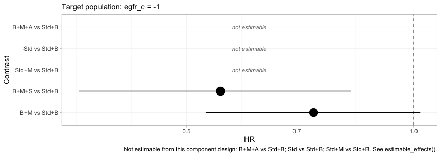
plot of chunk forest-target
Compare this with the frequentist forest above, which drew five estimates from the same network. Three of them are gone, replaced by the words “not estimable”. Nothing has been lost: the three that vanished were never population-adjusted estimates in the first place, only prior-driven ones dressed as estimates, and the plot now says so.
The same effects can be reported one component at a time.
forest(fit_ms, what = "component", newdata = target)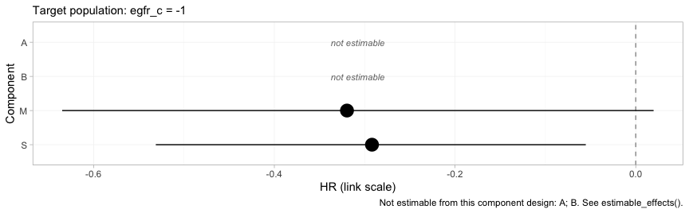
plot of chunk forest-component
Each row is the incremental log hazard ratio of adding one drug to
whatever the patient is already taking, evaluated at eGFR 50. This is
the level at which the additivity assumption lives, and it is also where
the disconnection is repaired: M and S are
estimated, A and B are not, and the two
treatment contrasts that survive are exactly the two that can be written
using only M and S.
knitr::kable(league_table(fit_ms, newdata = target),
caption = "League table of hazard ratios at eGFR 50 (row vs column)")| B+M | B+M+A | B+M+S | Std | Std+B | Std+M | |
|---|---|---|---|---|---|---|
| B+M | B+M | 1.35 (1.06, 1.70) | 0.74 (0.53, 1.02) | |||
| B+M+A | B+M+A | |||||
| B+M+S | 0.75 (0.59, 0.95) | B+M+S | 0.55 (0.36, 0.83) | |||
| Std | Std | 1.40 (0.98, 1.89) | ||||
| Std+B | 1.40 (0.98, 1.89) | 1.88 (1.21, 2.78) | Std+B | |||
| Std+M | 0.74 (0.53, 1.02) | Std+M |
The empty cells are not missing data. They are the pairs this design cannot compare in this population, and a league table that filled them in with prior-driven numbers would be worse than one that leaves them blank.
Sweeping the target population
Two named populations were a convenience. The estimand is defined at every value of the effect modifier, so vary it and plot the whole family at once.
grid <- seq(-2, 2, by = 0.2)
curve <- do.call(rbind, lapply(grid, function(x) {
re <- relative_effects(fit_ms, reference = "Std+B",
newdata = data.frame(egfr_c = x))
re <- re[re$treatment %in% c("B+M", "B+M+S"), ]
data.frame(x = x, treatment = re$treatment, HR = re$estimate,
lower = re$lower, upper = re$upper)
}))
curve$truth <- exp(mapply(truth, curve$treatment, "Std+B", curve$x))
ggplot(curve, aes(60 + 10 * x, HR, color = treatment, fill = treatment)) +
geom_hline(yintercept = 1, linewidth = 0.3) +
geom_ribbon(aes(ymin = lower, ymax = upper), alpha = 0.15, color = NA) +
geom_line(linewidth = 0.9) +
geom_line(aes(y = truth), linetype = "22", linewidth = 0.7) +
scale_y_log10(breaks = c(0.3, 0.4, 0.5, 0.6, 0.8, 1.0, 1.2)) +
labs(x = "eGFR of the target population (mL/min/1.73 m2)",
y = "Hazard ratio vs Std+B (log scale)", color = NULL, fill = NULL,
title = "A population-adjusted hazard ratio is a curve, not a number",
subtitle = "Solid: cML-NMR posterior mean with 95% CrI. Dashed: the truth.") +
theme_minimal(base_size = 11) +
theme(legend.position = "bottom")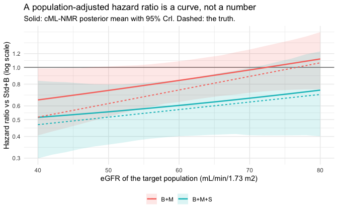
plot of chunk curve
The hierarchy, and what it refuses to rank
A hazard ratio below one is a benefit, so on this scale lower
is better, and that has to be said out loud:
cpaic_ranks() and rank_probs() both default to
the opposite convention.
plot(cpaic_ranks(fit_ms, newdata = target, lower_is_better = TRUE))
#> Warning: Dropped from the hierarchy as not estimable in this target population: B+M,
#> B+M+A, B+M+S, Std+B. Ranking them would rank the prior. See estimable_effects_at().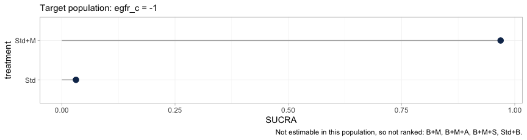
plot of chunk hierarchy
The warning is the figure’s most important output. A treatment
hierarchy is anchored at the network reference, here Std,
and every treatment containing the beta-blocker is unidentifiable
against Std as a population-adjusted effect, for
the reason the estimability map gave. Four of the six treatments are
therefore dropped, and the hierarchy that survives compares two. It is a
thin answer, and it is the honest one.
Pushed one step further, the rankogram declines to draw at all.
tryCatch(
plot(rank_probs(fit_ms, newdata = target, lower_is_better = TRUE)),
error = function(e) message("rank_probs() refused: ", conditionMessage(e)))
#> Warning: Dropped from the hierarchy as not estimable in this target population: B+M,
#> B+M+A, B+M+S, Std+B. Ranking them would rank the prior. See estimable_effects_at().
#> rank_probs() refused: Fewer than two elements are estimable in this target population, so no hierarchy can be formed. See estimable_effects_at().rank_probs() ranks the non-reference treatments, so
where cpaic_ranks() had two elements it has one, and it
stops. This is not a defect to be worked around with an argument. It is
Step 3 of the Wigle et al. hierarchy workflow (Wigle et al. 2026) enforced in code:
refine the ranking set to the elements the target population actually
identifies, and if too few remain, say so. A rankogram of a prior-driven
posterior would look exactly as confident as a real one.
Rank the components instead and the picture comes
back, because M and S are both identified from
IPD.
plot(rank_probs(fit_ms, newdata = target, what = "component",
lower_is_better = TRUE))
#> Warning: Dropped from the hierarchy as not estimable in this target population: A, B.
#> Ranking them would rank the prior. See estimable_effects_at().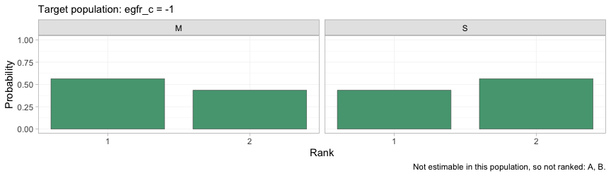
plot of chunk rankogram-component
And because a component’s effect is beta_c + Gamma_c x,
its rank is a function of the target population. This is the figure the
whole vignette has been building toward.
plot_rank_curve(fit_ms, em = "egfr_c", values = seq(-2, 2, by = 0.25),
what = "component", lower_is_better = TRUE)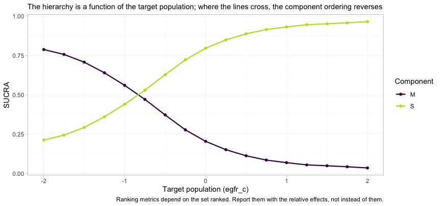
plot of chunk rank-curve
With two components in the ranked set, SUCRA reduces to the posterior probability that a component is the better of the two, and the two curves cross. At the chronic-kidney-disease end of the grid the MRA leads; at the preserved-renal end the SGLT2 inhibitor leads, and by a wide margin. Near eGFR 50 the two are close enough to a coin toss that the ordering carries almost no information, which is what the SUCRA values say and what a bare list of ranks would hide. A component hierarchy quoted without a target population is not a wrong answer to the question; it is not an answer to any question.
Conditional and marginal are not the same thing here
In the continuous vignette cstc() and
cmaic() agreed, because the mean difference is collapsible.
The hazard ratio is not collapsible (Greenland et al.
1999): averaging individual hazard ratios over a
heterogeneous population does not give the population’s hazard ratio,
and the marginal hazard ratio is pulled toward the null relative to the
conditional one, even when the proportional-hazards model is exactly
right and there is no confounding.
So cstc() (conditional) and cmaic()
(marginal) estimate different estimands, and both can
be correct at once (Remiro-Azócar et al. 2022).
cmlnmr() targets the conditional contrast
and therefore lines up with cstc().
We can check this without argument, because we know the truth. Simulate an enormous trial in the target population and read off both quantities:
oracle <- function(t1, t2, x_target, egfr_sd = 18, n = 150000) {
d <- rbind(gen_arm("O", t1, n, 0, 60 + 10 * x_target, egfr_sd),
gen_arm("O", t2, n, 0, 60 + 10 * x_target, egfr_sd))
d$arm <- as.integer(d$.trt == t1)
d$xc <- d$egfr_c - x_target # center the modifier at the target
c( # conditional AT x_target: arm coefficient with the interaction in the model
conditional = coef(coxph(Surv(.time, .y) ~ arm * xc, data = d))[["arm"]],
# marginal IN the target population: the unadjusted contrast
marginal = coef(coxph(Surv(.time, .y) ~ arm, data = d))[["arm"]])
}
set.seed(99)
orc <- oracle("B+M+S", "B+M", -1) # the SGLT2 edge, in the eGFR-50 population
round(c(orc, simulated_truth = beta_true[["S"]] + gamma_true[["S"]] * -1,
attenuation_pct = 100 * (1 - abs(orc[["marginal"]]) /
abs(orc[["conditional"]]))), 3)
#> conditional marginal simulated_truth attenuation_pct
#> -0.181 -0.160 -0.180 11.733The conditional log hazard ratio recovers the value we simulated. The marginal one is about a tenth smaller in magnitude, and it is smaller by construction, not by mistake: this is a randomized comparison with 150,000 patients per arm and a correctly specified model. The gap is non-collapsibility, and no amount of data will close it.
pick <- function(x, t1) {
r <- x[x$treatment == t1, ]
c(HR = r$estimate, lower = r$lower, upper = r$upper)
}
bayes_ckd <- relative_effects(fit_ms, reference = "Std+B",
newdata = data.frame(egfr_c = -1))
cm <- rbind(
data.frame(method = "cSTC (conditional)", estimand = "conditional",
t(pick(relative_effects(stc_ckd, reference = "Std+B"), "B+M+S"))),
data.frame(method = "cMAIC (marginal)", estimand = "marginal",
t(pick(relative_effects(maic_ckd, reference = "Std+B"), "B+M+S"))),
data.frame(method = "cML-NMR (conditional)", estimand = "conditional",
t(pick(bayes_ckd, "B+M+S"))))
cm$true_conditional_HR <- exp(truth("B+M+S", "Std+B", -1))
knitr::kable(cm, digits = 3, row.names = FALSE,
caption = "B+M+S vs Std+B at eGFR 50: two estimands, three routes")| method | estimand | HR | lower | upper | true_conditional_HR |
|---|---|---|---|---|---|
| cSTC (conditional) | conditional | 0.621 | 0.404 | 0.953 | 0.517 |
| cMAIC (marginal) | marginal | 0.703 | 0.490 | 1.007 | 0.517 |
| cML-NMR (conditional) | conditional | 0.555 | 0.360 | 0.826 | 0.517 |
There is a second, sharper reason to prefer the conditional route in
a component model. The additive structure
lives on the linear predictor, and conditional log
hazard ratios add up there by construction. Marginal log hazard ratios
do not: because the measure is not collapsible, the marginal effect of
M + S is not the sum of the marginal effects of
M and of S. Feeding cmaic()
contrasts into an additive component bridge is therefore an
approximation, and one that gets worse the more components you stack.
cstc() and cmlnmr() have no such problem. This
is a real cost of cmaic() on a non-collapsible scale, and
it does not arise for the mean difference.
Prior sensitivity
ps <- prior_sensitivity(fit_ms, newdata = data.frame(egfr_c = -1),
prior = "gamma", reference = "Std+B",
chains = 2, iter_warmup = 250, iter_sampling = 250)
ps
#> cML-NMR prior sensitivity: gamma prior
#> treatment comparator estimate tighter looser move_tighter move_looser max_movement
#> B+M Std+B -0.320 -0.314 -0.313 0.006 0.007 0.007
#> B+M+A Std+B -0.527 -0.467 -0.558 0.060 0.031 0.060
#> B+M+S Std+B -0.612 -0.606 -0.608 0.006 0.004 0.006
#> Std Std+B 0.134 0.136 0.162 0.002 0.028 0.028
#> Std+M Std+B -0.186 -0.178 -0.150 0.007 0.036 0.036
#> estimable
#> TRUE
#> FALSE
#> TRUE
#> FALSE
#> FALSEThe two estimable contrasts barely move when the interaction prior is halved and doubled. The non-estimable ones are flagged, and their numbers move freely, which is what “prior-driven” looks like from the outside.
Model comparison: which baseline?
loo_pw <- loo::loo(fit_pw)
loo_ms <- loo::loo(fit_ms)
loo::loo_compare(list(piecewise = loo_pw, mspline = loo_ms))
#> model elpd_diff se_diff p_worse diag_diff diag_elpd
#> piecewise 0.0 0.0 NA
#> mspline -3.3 2.7 0.89 |elpd_diff| < 4
#>
#> Diagnostic flags present.
#> See ?`loo-glossary` (sections `diag_diff` and `diag_elpd`)
#> or https://mc-stan.org/loo/reference/loo-glossary.html.
dic(fit_pw)
#> Deviance information criterion
#> DIC: 5915.6
#> Mean deviance: 5890.5
#> Effective parameters (pV): 25.2
dic(fit_ms)
#> Deviance information criterion
#> DIC: 5924.3
#> Mean deviance: 5894.1
#> Effective parameters (pV): 30.2
loo::loo_compare(list(mspline_fixed = loo_ms, mspline_random = loo::loo(fit_re)))
#> model elpd_diff se_diff p_worse diag_diff diag_elpd
#> mspline_fixed 0.0 0.0 NA
#> mspline_random -1.0 0.4 0.99 |elpd_diff| < 4
#>
#> Diagnostic flags present.
#> See ?`loo-glossary` (sections `diag_diff` and `diag_elpd`)
#> or https://mc-stan.org/loo/reference/loo-glossary.html.The truth here is Weibull, whose hazard is smooth and monotone. A cubic M-spline can represent that exactly enough; a step function with three interior cut points can only approximate it. Whether leave-one-out cross-validation can see the difference at this sample size is a separate question, and the answer is usually “barely” (Vehtari et al. 2017). Choose the M-spline when you have no positive reason to believe the hazard is piecewise constant, and report the comparison rather than the winner. DIC (Spiegelhalter et al. 2002) is reported alongside because an aggregate arm contributes highly influential observations, which is exactly the situation in which PSIS-LOO’s Pareto diagnostic complains.
A model comparison summarized in one number hides where the
two models differ. Passing both dic() objects to
plot() gives the dev-dev plot, which compares them one data
point at a time.
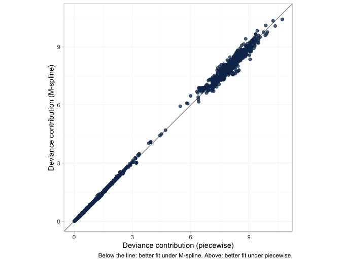
plot of chunk devdev
Each point is one observation’s posterior mean deviance under the two baselines. Points on the line of equality are fitted equally well by both; points below it are fitted better by the M-spline, points above it better by the step function, and the further a point lies from the line the more the choice of baseline matters to it. Read the spread against the numbers above, which are the same verdict arithmetically: the two DIC values differ by a fraction of a point, and the elpd difference is well inside its own standard error. Neither criterion can separate the baselines here, so the choice has to rest on what is plausible about the hazard rather than on what this much data can resolve.
plot_leverage(), the other DIC diagnostic, is
not available here and calling it raises an error
rather than returning a plot. A leverage plot needs the saturated model,
and a censored observation has no saturated reference, so there is no
residual deviance to put on the axis; multinma declines the plot for a
survival likelihood for the same reason. The dev-dev plot above is the
substitute.
What to take away
| Continuous (MD) | Survival (HR) | |
|---|---|---|
| Collapsible | yes | no |
cstc() and cmaic() target |
the same estimand | different estimands |
| Component effects add up on the | linear predictor, which is also the reporting scale | linear predictor, which is not the marginal scale |
| Aggregate likelihood | exact at the covariate means | exact, but needs pseudo-IPD and QMC integration |
| Aggregate input | arm mean and SE | reconstructed KM (time, status) per pseudo-patient |
Five things worth keeping.
Aggregate survival arms are pseudo-IPD, full stop. Events and person-time cannot identify an individual likelihood; the shortcut that pretends they can is biased upward by 36% in the two-group example above. Digitize the Kaplan-Meier curve (Guyot et al. 2012) and pass the rows.
The likelihood is exact. Both the hazard basis and its integral are evaluated in closed form, so events, right, left and interval censoring, and delayed entry are all handled without approximation. Nothing is being discretized behind your back.
Estimability is not reconnection. The component design has full rank here, yet
Std+MandB+M+Aare still not estimable as population-adjusted effects, becauseBandAeach enter through a single aggregate contrast and are pinned only at that study’s covariate mean.NAis the correct output, andestimable_effects_at()is not optional.Non-collapsibility is not a bug to be tuned away.
cstc()andcmlnmr()give you the conditional hazard ratio;cmaic()gives you the marginal one; both are right, and they differ. Decide which one your decision problem wants before you look at the numbers, and remember that only the conditional one is additive across components.The bridging assumption remains untestable. Reconnecting through
MandSrequires those component effects, and their interactions with eGFR, to be the same in the legacy and contemporary trials. There is no cross-gap evidence to test that with, and there never will be (Veroniki et al. 2026).
An honest limitation to close on, and it is the biggest one here. The whole analysis assumes proportional hazards conditional on eGFR, and it assumes that hazard ratios (rather than, say, restricted mean survival times) are what the decision needs. Neither is innocuous: the contemporary SGLT2 trials in real heart failure show early separation of the survival curves, which is exactly the pattern a constant conditional hazard ratio cannot represent. A flexible baseline hazard does not rescue this, because the baseline is shared across arms; what would be needed is a time-varying treatment effect, which cpaic does not currently fit. Check proportionality before you trust any of the numbers above, and if it fails, say so rather than reporting a hazard ratio anyway.